공통 > 하단 메뉴
문제 : • 하단 메뉴 글자가 10px·굵기 600으로 작고 굵습니다. • 안 고른 칸은 옅은 회색(#9E9E9E)이라 빽빽하고 흐리게 보입니다. • 메뉴 높이가 53px이고, 아이콘이 윗선에서 6px만 떨어져 답답합니다. • 자간은 0이라 원인이 아닙니다. 제안 : • 메뉴 높이는 62px, 아이콘 위 여백은 9px로 바꿔 주세요. 아이폰 아래 여백은 지금처럼 따로 둡니다. • 글자는 12px, 고른 칸 600 · 나머지 500으로 해 주세요. • 안 고른 칸의 아이콘·글자 색은 #666666입니다(디자인 가이드 6.10절). • 아이콘 선 1.5px, 자간 0, 가운데 「+」는 그대로 둡니다.
프로토타입 열기 → https://hapjung470.github.io/jollypot-preview/fix1110/jollypot-v2-fix01-bottom-nav-v1-1-1.html
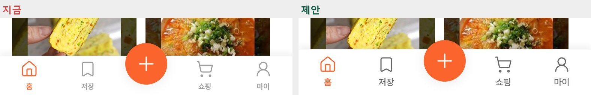
| 항목 | 지금 (개발 앱에서 잰 값) | 제안 |
|---|---|---|
| 메뉴 높이 | 53px | 62px (아이폰 아래 여백은 지금처럼 따로) |
| 아이콘 위 여백 | 6px | 9px |
| 글자 크기 | 10px | 12px |
| 글자 굵기 | 600 (전부) | 고른 칸 600 · 나머지 500 |
| 안 고른 칸 색 | #9E9E9E (옅은 회색) | #666666 (미드그레이) |
| 아이콘 | lucide, 선 1.5px | 그대로 (05-1의 기준 두께) |
| 자간 | 0 | 그대로 |
| 가운데 「+」 | 오렌지 56px | 그대로 |
홈·쇼핑·레시피 상세 > 오른쪽 아래 맨 위로 버튼
문제 : • 버튼 색 #89A17F는 디자인 가이드가 폐기한 세이지 그린 계열입니다. • 흰 화살표와의 대비가 2.81:1로, 아이콘 기준 3:1에 못 미칩니다. • 크기가 42px로 작고, 약 300px만 내려도 나타나 늘 화면을 가립니다. • 하단 메뉴가 숨어도 화면 아래 90px에 그대로 떠 있습니다. • 레시피 상세에서는 아래 버튼 줄과 7px만 떨어져 잘못 누르기 쉽습니다. 제안 : • 흰 바탕 + 1px #CCCFD4 테두리 + 잉크 #212121 화살표로 바꿔 주세요. 화살표는 lucide arrow-up, 선 1.5px입니다. • 그림자는 없앱니다. 크기는 44×44px, 오른쪽 여백은 16px입니다. • 약 1,600px(두 화면쯤) 내렸을 때 나타나게 해 주세요. • 하단 메뉴가 보이면 메뉴 위 16px, 메뉴가 숨으면 화면 아래 24px(+아이폰 아래 여백)로 따라 움직입니다. • 레시피 상세에서는 아래 버튼 줄 위 16px에 둡니다.
프로토타입 열기 → https://hapjung470.github.io/jollypot-preview/fix1110/jollypot-v2-fix02-scroll-top-v1-1.html
테스트 앱에서 보기: 627 밥솥 족발
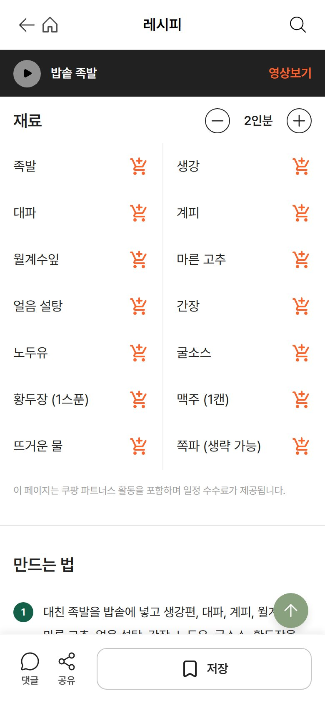
| 항목 | 지금 (개발 앱에서 잰 값) | 제안 |
|---|---|---|
| 바탕 | #89A17F (폐기한 세이지 그린 계열) | 흰색 #FFFFFF |
| 테두리·그림자 | 테두리 없음 · 그림자 있음 | 1px #CCCFD4 테두리 · 그림자 없음 |
| 화살표 | 흰색 (대비 2.81:1) | 잉크 #212121, lucide arrow-up, 선 1.5px (대비 16.1:1) |
| 크기 | 42×42px | 44×44px |
| 오른쪽 여백 | 20px | 16px |
| 아래 위치 (홈·쇼핑) | 늘 화면 아래 90px (메뉴가 숨어도 그대로) | 메뉴 보일 때: 메뉴 위 16px / 메뉴 숨으면: 화면 아래 24px (+아이폰 아래 여백) |
| 아래 위치 (레시피 상세) | 아래 버튼 줄과 7px | 아래 버튼 줄 위 16px |
| 나타나는 때 | 약 300px 내렸을 때 | 약 1,600px (두 화면쯤) 내렸을 때 |
홈·쇼핑 > 하단 메뉴
문제 : • 홈·쇼핑을 내리면 하단 메뉴가 숨는데, 다시 올려도 돌아오지 않습니다. • 960px까지 올려 봐도 그대로였고, 맨 위에 닿아야만 나타났습니다. • 그동안 다른 칸(저장·쇼핑·마이)이나 「+」로 갈 길이 없습니다. 제안 : • 조금(약 12px)만 올려도 하단 메뉴가 바로 다시 나오게 해 주세요. • 맨 아래에 닿았을 때도 다시 보이게 해 주세요. • 내릴 때 숨는 동작은 그대로 둡니다.
프로토타입 열기 → https://hapjung470.github.io/jollypot-preview/fix1110/jollypot-v2-fix02b-nav-return-v1-1.html
| 항목 | 지금 (개발 앱에서 잰 값) | 제안 |
|---|---|---|
| 다시 나오는 때 | 맨 위에 닿았을 때만 | 약 12px만 올려도 바로 |
| 맨 아래에 닿았을 때 | 숨은 채 | 다시 보임 |
| 숨는 때 | 내릴 때 (그대로) | 그대로 |
홈·냉장고·컬렉션 > 상단 바 아래 선
문제 : • 홈·냉장고는 내리면, 컬렉션은 맨 위부터 상단 바 아래에 1px 회색 선(#CCCFD4)이 생깁니다. • 이 색은 가이드에서 카드 테두리 색이라 선이 도드라집니다. • 나머지 20여 개 화면(마이·레시피 상세·상품 상세·장바구니·검색 등)은 선이 없습니다. 그래서 화면을 오갈 때마다 줄이 생겼다 없어집니다. 제안 : • 홈·냉장고·컬렉션의 상단 바 아래 선을 없애 주세요. • 그 자리에 그림자·흐림도 두지 않습니다. 다른 화면처럼 내용이 상단 바 밑으로 바로 지나가면 됩니다. • 쇼핑 분류 탭 아래 줄(1px #EAEAEA)은 탭의 일부라 그대로 둡니다.
프로토타입 열기 → https://hapjung470.github.io/jollypot-preview/fix1110/jollypot-v2-fix03-header-line-v1-2.html
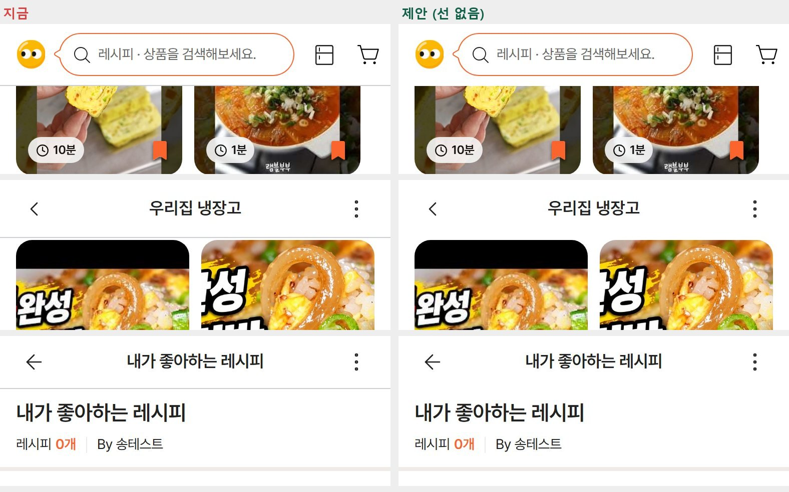
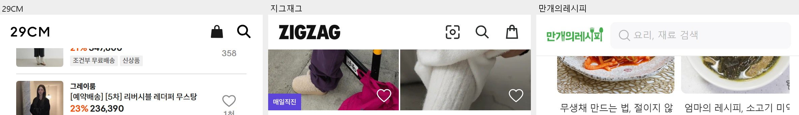
| 항목 | 지금 (개발 앱에서 잰 값) | 제안 |
|---|---|---|
| 홈 | 내리면 상단 바 아래 1px #CCCFD4 | 없음 |
| 냉장고 | 내리면 1px #CCCFD4 (맨 위에서는 투명) | 없음 |
| 컬렉션 | 맨 위부터 늘 1px #CCCFD4 | 없음 |
| 그 밖의 상단 바 (마이·레시피 상세·상품 상세·장바구니·검색·베스트 등) | 선 없음 | 그대로 |
| 선 대신 넣는 것 | — | 없음 (그림자·흐림도 두지 않음) |
| 쇼핑 칸 아래 회색 줄 | 1px #EAEAEA | 그대로 (상단 바가 아니라 쇼핑 분류 탭의 줄) |
마이페이지·레시피 상세·검색 등 20개 화면 > 상단 바 홈 아이콘
문제 : • 상단 홈 아이콘이 하단 메뉴 홈과 모양·색이 다릅니다. • 상단은 다른 아이콘 묶음의 채운 선 집(#515151, 가이드에 없는 회색)이고, 하단 메뉴는 lucide 선 집입니다. • 검색 화면만 홈이 왼쪽에서 66px에 있어, 다른 화면(48px)보다 「←」에서 멀리 떨어져 있습니다. • 해당 화면: 마이페이지·레시피 상세·검색·베스트·신상품·타임특가·기획전·주문 내역·찜·최근 본 상품·쿠폰·리뷰·내 레시피·회원정보 변경·적립금·배송지·취소/반품 등 제안 : • 상단 홈 아이콘을 하단 메뉴와 같은 lucide house로 바꿔 주세요. 24px, 선 1.5px, 잉크 #212121입니다. • 자리는 지금처럼 「←」 바로 옆(왼쪽에서 48px)입니다. 검색 화면도 48px로 맞춰 주세요. • 검색·장바구니·공유 등 다른 아이콘의 종류와 자리는 바꾸지 않습니다.
프로토타입 열기 → https://hapjung470.github.io/jollypot-preview/fix1110/jollypot-v2-fix04-home-icon-v1-1.html
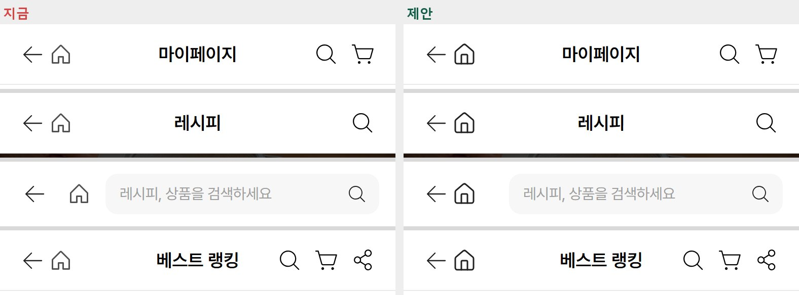
| 항목 | 지금 (개발 앱에서 잰 값) | 제안 |
|---|---|---|
| 홈 모양 | 채운 선 집 (다른 아이콘 묶음, 선 1.5px) | 하단 메뉴와 같은 lucide house |
| 홈 색 | #515151 (가이드에 없는 회색) | 잉크 #212121 |
| 홈 크기·두께 | 24px · 1.5px | 24px · 1.5px (그대로) |
| 홈 자리 | 「←」 오른쪽 4px (왼쪽에서 48px) · 검색 화면만 66px | 모든 화면 48px (검색 화면도 같게) |
| 다른 아이콘(검색·장바구니·공유) | — | 이 항목에서는 그대로 (두께·색은 05-1) |
| 해당 화면 | 마이페이지·레시피 상세·검색·베스트·신상품·타임특가·기획전·주문 내역·찜·최근 본 상품·쿠폰·리뷰·내 레시피·회원정보 변경·적립금·배송지·취소/반품 등 | 같음 |
상품 상세·장바구니·냉장고·컬렉션 > 상단 바
문제 : • 상품 상세·장바구니·냉장고·컬렉션 상단에는 홈 아이콘이 없습니다. • 공유 링크처럼 앞 화면 없이 열고 「←」을 누르면 빈 화면(about:blank)으로 나갑니다. 상품 상세·장바구니·컬렉션·레시피 상세에서 실제로 눌러 확인했습니다. • 냉장고 「‹」는 반대로, 어디서 들어가도 늘 홈으로 갑니다. • 뒤로가기 모양도 꺾쇠 「‹」(1.3px)라 다른 화면의 「←」과 다릅니다. 제안 : • 이 4개 화면 왼쪽에 마이페이지와 같은 「← 홈」을 넣어 주세요. 「←」은 왼쪽에서 20px, 홈은 48px입니다. • 오른쪽은 지금 그대로 둡니다. 상품 상세는 검색·장바구니, 냉장고·컬렉션은 ⋮, 장바구니는 없음입니다. • 제목은 밀리지 않게 가운데 그대로 둡니다. • 「←」은 앞 화면으로 가고, 앞 화면이 없으면 홈으로 보내 주세요. 모든 화면에 같은 규칙이고, 냉장고 「‹」도 이 규칙으로 바꿉니다. • 주문서·결제·레시피 작성/편집처럼 쓰는 중인 화면은 홈 없이 「←」(또는 ✕)만 둡니다.
프로토타입 열기 → https://hapjung470.github.io/jollypot-preview/fix1110/jollypot-v2-fix05-home-icon-add-v1-1.html
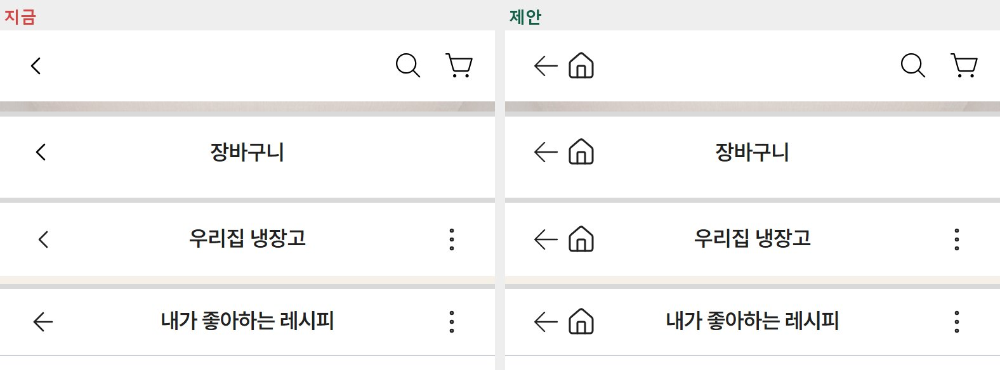
| 항목 | 지금 (개발 앱에서 잰 값) | 제안 |
|---|---|---|
| 왼쪽 | 꺾쇠 「‹」(lucide 1.3px) 하나 · 컬렉션은 다른 화살표 | 「←」 + 홈 (마이페이지와 같은 아이콘·자리: 20px · 48px) |
| 오른쪽 — 상품 상세 | 검색 · 장바구니 | 그대로 |
| 오른쪽 — 장바구니 | 없음 | 그대로 |
| 오른쪽 — 냉장고 · 컬렉션 | ⋮ (관리·더보기) | 그대로 |
| 제목 자리 | 가운데 | 그대로 (홈을 넣어도 밀리지 않게) |
| 앞 화면 없이 열었을 때 「←」 | 빈 화면(about:blank)으로 나감 — 실제로 눌러 확인 | 홈으로 보냄 |
| 냉장고 「‹」 | 어디서 들어가도 늘 홈으로 감(이름도 「홈으로 돌아가기」) | 「←」은 앞 화면으로, 홈은 홈으로 — 둘을 나눔 |
| 쓰는 중인 화면 | — | 주문서·결제·레시피 작성/편집은 홈 없이 「←」(또는 ✕)만 |
공통 > 상단 바 아이콘
문제 : • 상단 아이콘 두께가 세 가지(약 1.1·1.3·1.5px), 색이 다섯 가지 섞여 있습니다. • 마이페이지 한 줄 안에서도 「←」·검색·장바구니는 약 1.1px인데 홈만 1.5px이라, 홈이 더 굵어 보입니다. • 꺾쇠 「‹」와 컬렉션 「←」·「⋮」는 1.3px이고, 하단 메뉴는 1.5px입니다. • 색은 #000·#1F1F1F·#212121·#515151·#9E9E9E가 섞여 있습니다. 가이드는 순검정 #000을 쓰지 않습니다. 제안 : • 상단 바 아이콘을 모두 lucide, 24px 상자, 선 1.5px, 잉크 #212121로 맞춰 주세요. 하단 메뉴와 같은 두께입니다. • 바꿀 것: 「←」 그림(back.svg), 홈, 검색·장바구니·공유, 꺾쇠 「‹」(→ 「←」), 컬렉션 「←」·「⋮」, 홈 상단 냉장고·장바구니입니다. • 아이콘 종류와 자리는 화면마다 지금 그대로 둡니다. • 홈 캐릭터와 검색창 안 돋보기는 그대로 둡니다.
프로토타입 열기 → https://hapjung470.github.io/jollypot-preview/fix1110/jollypot-v2-fix05b-icon-weight-v1.html
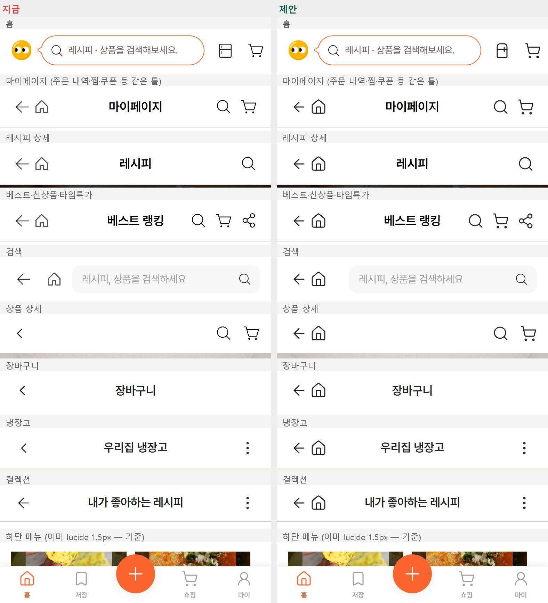
| 항목 | 지금 (개발 앱에서 잰 값) | 제안 |
|---|---|---|
| 「←」 뒤로가기 그림 (마이 등 20개 화면) | 약 1.1px · #212121 | 1.5px · #212121 (lucide arrow-left) |
| 홈 (같은 20개 화면) | 1.5px · #515151 | 1.5px · #212121 (04: lucide house) |
| 검색 · 장바구니 · 공유 (마이·베스트·상품 상세 등) | 약 1.1px · #000000, 크기 20·22·18px | 1.5px · #212121, 24px 상자 (lucide search · shopping-cart · share-2) |
| 「‹」 꺾쇠 (상품 상세·장바구니·냉장고) | 1.3px · #000000 / #212121 | 「←」 1.5px · #212121 (다른 화면과 같은 모양) |
| 컬렉션 「←」 · 「⋮」 | 1.3px · #212121 | 1.5px · #212121 |
| 홈 상단 냉장고 · 장바구니 | 약 1.0~1.1px · #1F1F1F / #000000 | 1.5px · #212121 (lucide refrigerator · shopping-cart) |
| 하단 메뉴 | 1.5px · #9E9E9E / #FC642D (lucide) | 그대로 — 이 값이 기준 |
| 그대로 두는 것 | — | 홈 캐릭터, 검색창 안 돋보기(입력칸의 일부) |
레시피 만들기 > 직접 만들기
문제 : • 레시피 만들기 창의 「직접 만들기」 아이콘이 파란 #3276AE 채운 문서 그림입니다. • 이 파랑은 가이드에서 「링크」 전용 색이라, 졸리팟 화면 어디에도 없는 색이 큰 아이콘으로 들어가 튑니다. 제안 : • 아이콘만 오렌지 #FC642D 선 아이콘으로 바꿔 주세요. lucide notebook-pen, 41px, 선 굵기 1.75입니다. • 아이콘 바탕은 위 「링크로 만들기」 칸과 같은 #F7F7F7(70px·둥글기 16px) 그대로 둡니다.
프로토타입 열기 → https://hapjung470.github.io/jollypot-preview/fix1110/jollypot-v2-fix06-create-icon-v1-1.html
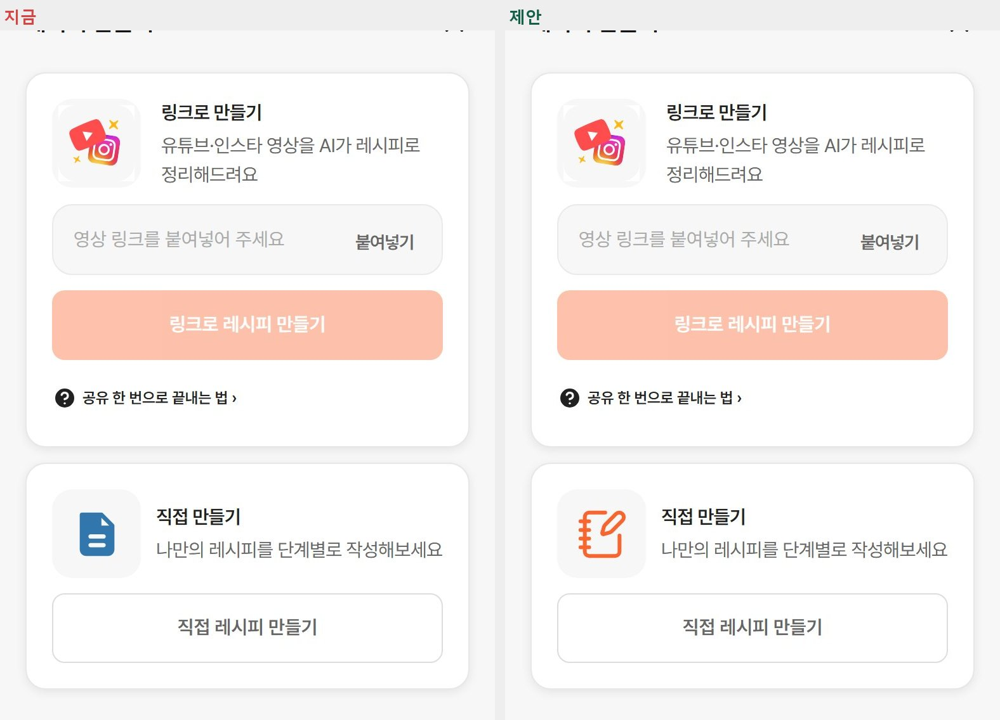
| 항목 | 지금 (개발 앱에서 잰 값) | 제안 |
|---|---|---|
| 아이콘 | 파란 #3276AE 채운 문서 그림 (41px) | 오렌지 #FC642D 선 아이콘 lucide notebook-pen (41px, 선 굵기 1.75) |
| 아이콘 바탕 | #F7F7F7 · 70px · 둥글기 16px | 그대로 (위 칸과 같음) |
레시피 만들기 > [링크로 레시피 만들기] 버튼
문제 : • 링크를 넣기 전(누를 수 없을 때)에도 버튼이 오렌지를 40% 흐리게만 한 모양입니다. • 그래서 누를 수 있는 버튼처럼 보입니다. 가이드는 흐린 오렌지로 비활성을 나타내지 않습니다. 제안 : • 링크를 넣기 전에는 바탕·테두리 #E5E7EB, 글자 #9E9E9E로 보여 주세요. 흐림은 없앱니다. • 링크를 넣으면 지금처럼 오렌지입니다. • 버튼 크기는 그대로 둡니다.
프로토타입 열기 → https://hapjung470.github.io/jollypot-preview/fix1110/jollypot-v2-fix06b-disabled-button-v1-1.html
| 항목 | 지금 (개발 앱에서 잰 값) | 제안 |
|---|---|---|
| 링크 넣기 전 | 오렌지 #FC642D · 흐림(투명도 0.4) · 흰 글자 | 바탕·테두리 #E5E7EB · 글자 #9E9E9E · 흐림 없음 |
| 링크 넣은 뒤 | 오렌지 · 흰 글자 | 그대로 |
| 크기 | 높이 55px · 둥글기 10px · 15px·600 | 그대로 |
저장 > 내려서 볼 때
문제 : • 저장 화면을 내리면 작은 제목 「○○님의 저장 목록」(50px)과 칩 줄(46px)이 함께 위에 남습니다. 둘이 96px을 차지합니다. • 내려서 보는 내내 실명도 맨 위에 보입니다. 제안 : • 내려서 볼 때는 칩 줄(모두·레시피·컬렉션·상품)만 위에 붙이고, 제목 줄은 숨겨 주세요. • 조금이라도 올리면 제목 줄이 다시 나옵니다. • 칩 줄 아래에는 선을 두지 않습니다(03번과 같은 규칙).
프로토타입 열기 → https://hapjung470.github.io/jollypot-preview/fix1110/jollypot-v2-fix07-save-sticky-v1-1-1.html
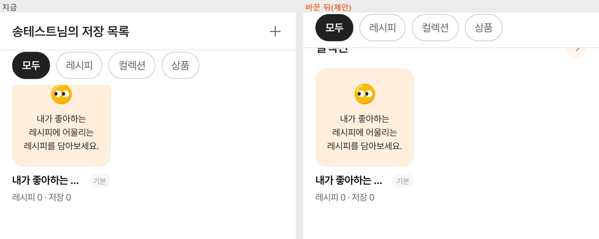
| 항목 | 지금 (개발 앱에서 잰 값) | 제안 |
|---|---|---|
| 내렸을 때 위에 남는 것 | 제목 줄 50px + 칩 줄 46px = 96px | 칩 줄 46px만 |
| 제목 줄이 다시 나오는 때 | — | 조금이라도 올리면 (맨 위에서는 늘) |
| 칩 줄 아래 | 선 없음 | 그대로 선 없음 (03번과 같은 규칙) |
| 제목 글 | ○○님의 저장 목록 | 이 항목에서는 그대로 (저장 화면 프로토타입에서 「저장」 제안) |
레시피 상세 > 내려서 볼 때
문제 : • 레시피 상세를 내리면 상단 바(←·홈·레시피·검색, 60px)와 영상 줄(56px)이 함께 고정됩니다. • 둘이 116px, 화면의 약 14%를 차지해 조리 순서를 보며 따라 할 때 좁습니다. • 영상 줄 왼쪽 ▶ 동그라미와 오른쪽 「영상보기」가 같은 일을 두 번 합니다. 제안 : • 내려서 볼 때는 상단 바를 숨기고, 영상 줄 하나(56px)만 위에 고정해 주세요. • 영상 줄 맨 앞에 흰색 「←」(24px·선 1.5px)을 넣고, ▶ 동그라미는 빼 주세요. • 오른쪽은 「▶ 영상보기」 하나로 합칩니다. 바탕 #212121과 흰 요리 이름은 그대로입니다. • 조금이라도 올리면 상단 바(홈·검색 포함)가 다시 나옵니다.
프로토타입 열기 → https://hapjung470.github.io/jollypot-preview/fix1110/jollypot-v2-fix08-recipe-sticky-v1-1.html
테스트 앱에서 보기: 616 계란 미역국
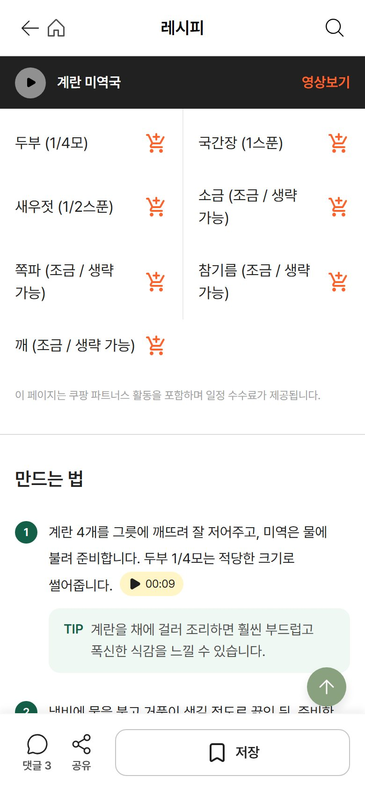
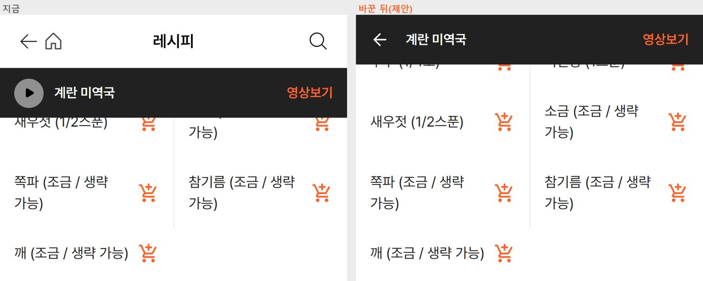
| 항목 | 지금 (개발 앱에서 잰 값) | 제안 |
|---|---|---|
| 내렸을 때 고정 | 상단 바 60px + 영상 줄 56px = 116px | 영상 줄 56px만 |
| 영상 줄 왼쪽 | 회색 ▶ 동그라미 | 「←」 뒤로가기 (흰색, 24px, 1.5px) |
| 영상 줄 오른쪽 | 영상보기 (오렌지) | ▶ 영상보기 (오렌지) |
| 영상 줄 바탕·글자 | #212121 · 요리 이름 흰 글자 | 그대로 |
| 상단 바가 다시 나오는 때 | — | 조금이라도 올리면 (홈·검색 포함) |
레시피 상세 > 저장 > 컬렉션 담기 창
문제 : • 레시피를 저장할 때 뜨는 컬렉션 담기 창이 컬렉션 수와 관계없이 같은 높이입니다. • 목록 칸이 205px뿐이라 줄(80px)이 2.5개만 보입니다. 컬렉션이 1개면 아래가 비어 있습니다. • 10개가 넘으면 원하는 컬렉션을 찾기 어렵습니다. • 제목 줄의 「새 저장」은 무엇을 하는 버튼인지 알기 어렵습니다. 제안 : • 창 높이는 내용만큼 늘어나되, 최대 화면의 86%로 해 주세요. • 컬렉션 줄 높이는 64px로 줄이고, 썸네일 크기는 그대로 둡니다. • 위 「레시피에 담아뒀어요」 안내와 「저장」 제목 줄은 고정하고, 목록만 움직이게 해 주세요. • 컬렉션이 10개를 넘으면 제목 줄 아래에 「컬렉션 찾기」 입력칸을 둡니다. 최근에 담은 컬렉션이 위로 오게 해 주세요. • 「새 저장」은 「+ 새 컬렉션」으로 바꿔 주세요.
프로토타입 열기 → https://hapjung470.github.io/jollypot-preview/fix1110/jollypot-v2-fix09-collection-sheet-v1-1.html
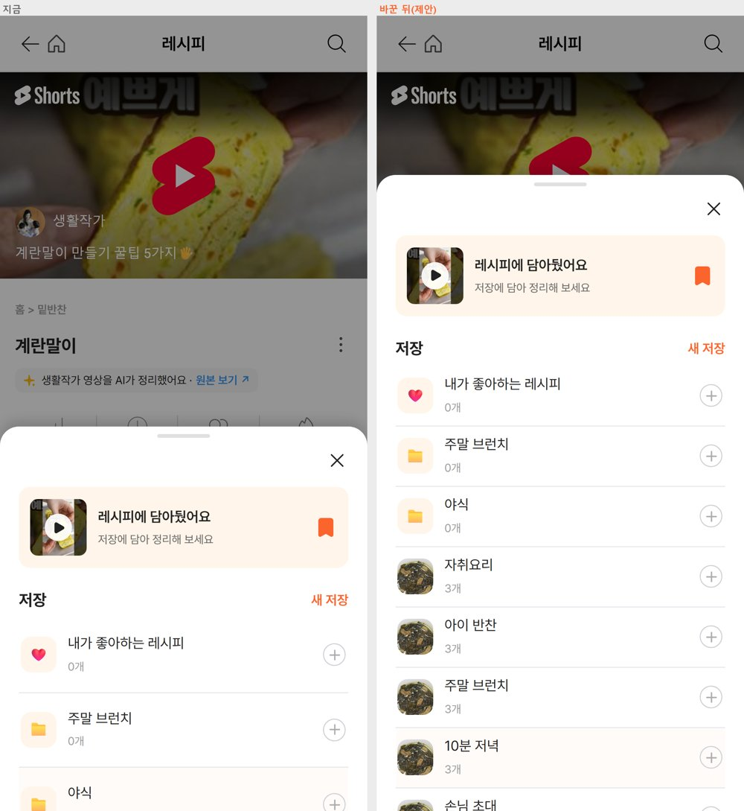
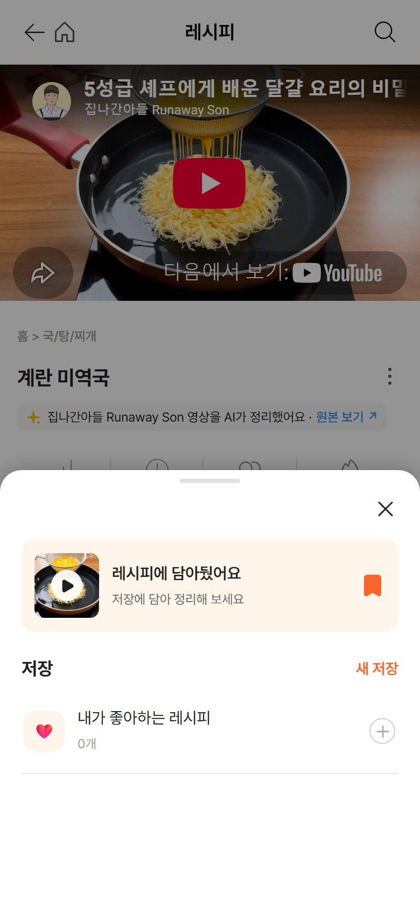
| 항목 | 지금 (개발 앱에서 잰 값) | 제안 |
|---|---|---|
| 창 높이 | 컬렉션 수와 관계없이 같음 (목록 칸 205px) | 내용만큼 늘어나되 최대 화면의 86% |
| 컬렉션 줄 높이 | 80px | 64px (썸네일 크기는 그대로) |
| 한 번에 보이는 줄 | 약 2.5개 | 12개일 때 약 7개 |
| 고정하는 것 | — | 위 「담아뒀어요」 안내 · 「저장」 제목 줄 (목록만 움직임) |
| 10개가 넘으면 | — | 제목 줄 아래 「컬렉션 찾기」 입력칸 |
| 순서 | — | 최근에 담은 컬렉션이 위 |
| 제목 줄 버튼 | 새 저장 | + 새 컬렉션 |
앱스토어 소개 화면 > 마지막 장 (피그마 「시안2」 7번째) · 디자이너
문제 : • 마지막 장만 주황 #FC642D 바탕이라, 크림색 앞 6장과 한 묶음으로 보이지 않습니다. • 흰 글자 대비가 3.0:1이라 작은 부제가 잘 안 읽힙니다. • 제목이 다른 장 제목보다 약 20% 작고, 두 줄 모두 흰색입니다. • 「졸리팟」 글씨가 맨 아래 작게 떨어져 있어 캐릭터와 따로 놉니다. 제안 : • 바탕을 앞 6장과 같은 크림 #FFF7F2로 바꿔 주세요. • 「졸리팟」 글씨는 빼고, 캐릭터 → 제목 2줄 → 부제를 한 묶음으로 둡니다. 묶음 가운데가 화면 높이의 약 45%에 오게 해 주세요. • 캐릭터는 제목 폭의 약 40%로 키우고, 캐릭터와 제목 사이는 제목 한 줄 높이만큼 둡니다. • 제목은 다른 장 제목과 같은 크기입니다. 「가족이 웃는 한끼,」는 오렌지, 「졸리팟이 곁에서 도울게요」는 잉크로 해 주세요. • 부제는 미드그레이 #666666입니다.
프로토타입 열기 → https://hapjung470.github.io/jollypot-preview/fix1110/jollypot-v2-fix10-appstore-last-v1-1.html
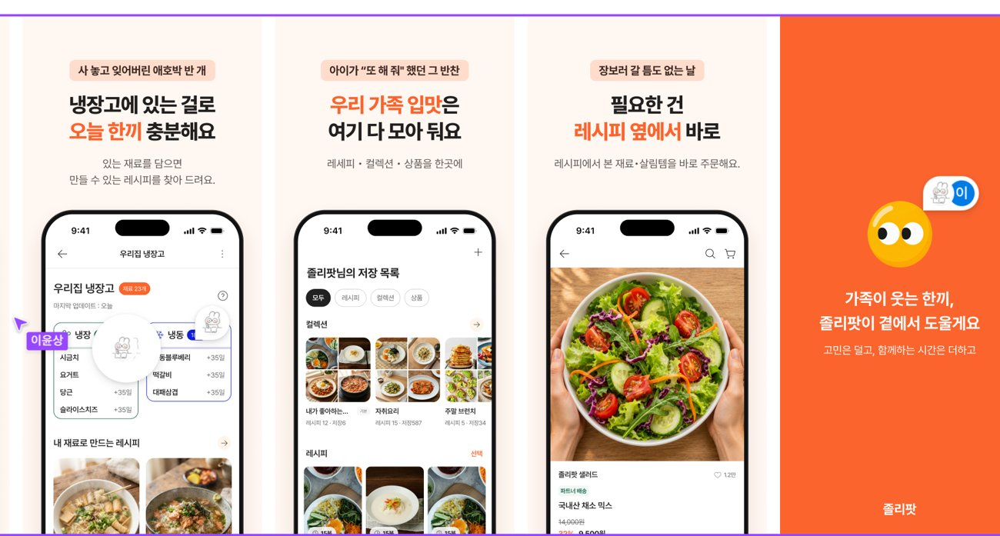
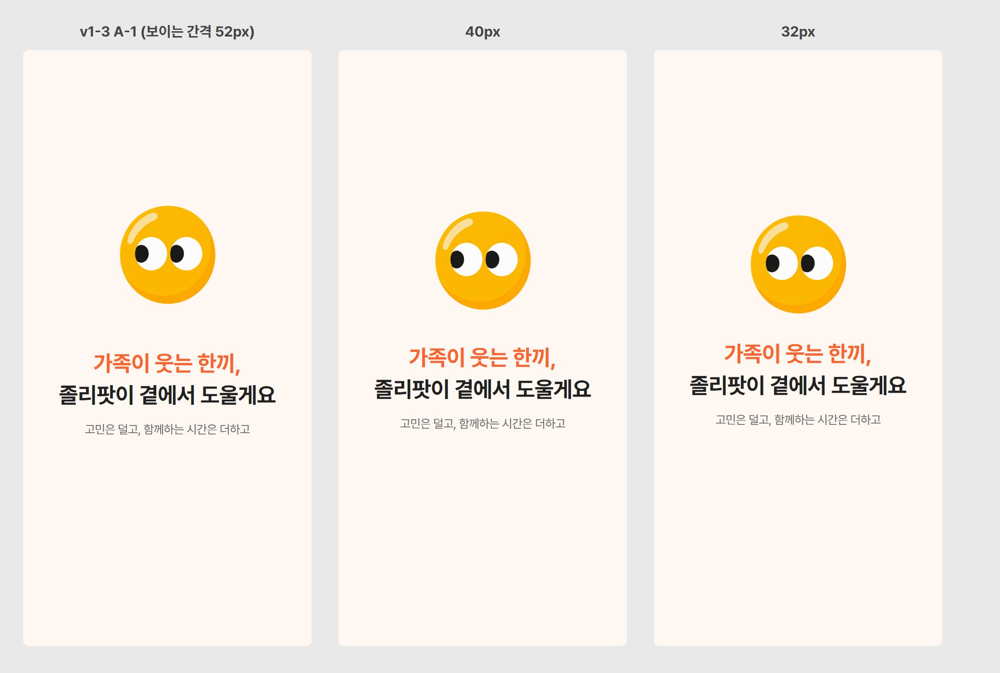
| 항목 | 지금 (개발 앱에서 잰 값) | 제안 |
|---|---|---|
| 바탕 | 주황 #FC642D (흰 글자 대비 3.0:1) | 크림 #FFF7F2 (앞 6장과 같음) |
| 제목 크기 | 다른 장 제목보다 약 20% 작음 | 다른 장 제목과 같은 크기 |
| 제목 색 | 두 줄 모두 흰색 | 「가족이 웃는 한끼,」 오렌지 · 「졸리팟이 곁에서 도울게요」 잉크 |
| 부제 | 흰색 | 미드그레이 #666666 |
| 「졸리팟」 글씨 | 맨 아래 작은 글씨 | 뺌 (제목 둘째 줄과 앱 이름에 이미 있음) |
| 캐릭터 | 위쪽에 따로 | 제목 폭의 약 40%로 키워 제목 바로 위 |
| 캐릭터와 제목 사이 | — | 보이는 간격 = 제목 한 줄 높이 (캐릭터 그림 아래 끝 ~ 제목 글자 윗끝). v1-3 안보다 약 40% 좁힘 |
| 묶음 위치 | — | 묶음 가운데가 화면 높이의 약 45% |
레시피 상세 > 재료 목록 > 장바구니 아이콘
문제 : • 재료마다 채운 오렌지 「카트+」 아이콘(24px)이 붙어 있습니다. • 재료가 많으면(밥솥 족발 14개) 아이콘이 재료 이름보다 먼저 보여 지저분합니다. • 「뜨거운 물」에도 사는 버튼이 있습니다. • 누르는 영역은 24×24px로 작고, 화면 읽기 이름이 비어 있습니다. 제안 : • 아이콘을 오렌지 #FC642D 선 카트로 바꿔 주세요. lucide shopping-cart, 20px, 선 굵기 1.75, 동그라미 바탕 없음입니다. • 이렇게 바꾸면 진한 오렌지 면적이 53% 줄어듭니다. • 누르는 영역은 44×44px로 넓히되, 줄 높이 56px는 그대로 둡니다. • 물·얼음물에는 버튼을 넣지 않습니다. • 화면 읽기 이름은 「(재료 이름) 쿠팡에서 보기」로 해 주세요.
프로토타입 열기 → https://hapjung470.github.io/jollypot-preview/fix1110/jollypot-v2-fix11-ingredient-cart-v1.html
테스트 앱에서 보기: 627 밥솥 족발
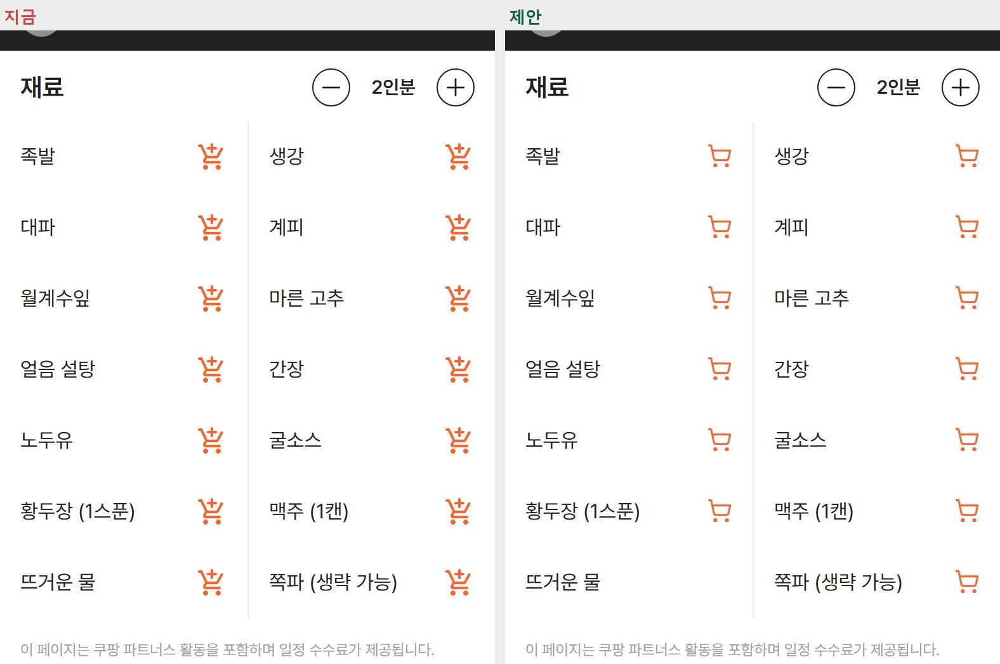
| 항목 | 지금 (개발 앱에서 잰 값) | 제안 |
|---|---|---|
| 아이콘 모양 | 채운 오렌지 「카트+」 24px | 오렌지 #FC642D 선 카트 (lucide shopping-cart) 20px · 선 굵기 1.75 (화면에서 약 1.5px, 05-1과 같은 두께) · 동그라미 바탕 없음 |
| 진한 오렌지 면적 (같은 화면) | 16,960점 | 8,012점 (−53%) |
| 누르는 영역 | 24×24px | 44×44px (줄 높이 56px는 그대로) |
| 물·얼음물 | 「뜨거운 물」에도 버튼 있음 | 버튼 없음 |
| 화면 읽기 이름 | 없음 (읽어 주는 이름 빈칸) | 「(재료 이름) 쿠팡에서 보기」 |
로그인 (전체 로그인 화면 없앰) · 모든 환경
문제 : • 로그인이 필요하면 「로그인이 필요합니다」 확인 창을 한 번 더 거칩니다(저장·만들기·하트). • 구매할 때는 화면이 통째로 로그인 화면으로 바뀌어, 고른 옵션·보던 레시피가 사라진 것처럼 보입니다. • 10월 가입의 84%가 카카오인데, 카카오 버튼은 화면 571px 아래에 있습니다. • 비회원 주문 버튼은 하단 메뉴 밑에 가려져 있습니다. • 버튼 모양이 넷(긴 버튼·큰 버튼·테두리 버튼·링크) 섞여 어수선합니다. • 아이디 저장 체크를 켜면 세이지 #89A17F입니다(가이드가 폐기한 색). 제안 : • 전체 로그인 화면과 확인 창을 없애 주세요. 로그인이 필요하면 하던 화면 위에 아래 창 하나(높이 353px)만 띄웁니다. • 창 틀: 위 모서리 20px, 손잡이 40×4, 좌우 여백 20px, 뒤 화면 어둡게 50%입니다. 옵션 선택 창과 같은 틀입니다. • 창 안은 위부터 ① 제목 「로그인하고 계속하기」(20px·700) ② 부제 「로그인하면 보던 화면으로 돌아와요」(14px·#666666) ③ ✕입니다. • 그 아래 ④ 긴 카카오 버튼(56px·16px 700, 「카카오로 로그인」, 말풍선 「⚡ 3초 만에 빠른 회원가입」)을 둡니다. • ⑤ 네이버·Apple·ID 동그라미(52px) 세 개를 한 줄로(사이 20px) 둡니다. ID는 #F1F1F3 바탕에 「ID」 16px 800입니다. • ⑥ 맨 아래는 버튼이 아닌 글자 한 줄입니다(15px 500, 누르는 칸 44px). 구매일 때는 「비회원으로 계속하기」, 그 밖에는 「비회원 주문조회」입니다. • ID를 누르면 같은 창 안에서 아이디 칸(48px 두 개)으로 바뀌고, ✕ 자리에 ←가 생깁니다. 아이디 찾기·비밀번호 찾기·회원가입 링크는 그 아래에 둡니다. • 아이디 저장 체크는 켰을 때 딥그린 #145F48 + 흰 ✓로 해 주세요. • 개발 규칙: /login으로 보내거나 확인 창을 띄우던 모든 곳에서 이 창을 띄웁니다. /login 주소로 바로 들어오면 홈 위에 띄웁니다. • 창은 한 번에 하나만 띄웁니다. 옵션 선택 창 등이 열려 있으면 내리고 같은 자리에 올립니다. ✕·쓸어내리기·뒤로가기는 원래 창으로 돌아갑니다(입력값 그대로). • 바꾸지 않는 것: 로그인을 묻는 곳, 로그인 뒤 돌아갈 곳(구매는 주문서, 저장은 보던 레시피), 비회원 조건, 회원가입·비회원 주문조회 화면.
프로토타입 열기 → https://hapjung470.github.io/jollypot-preview/fix1110/jollypot-v2-fix12-login-sheet-v1-1-1.html
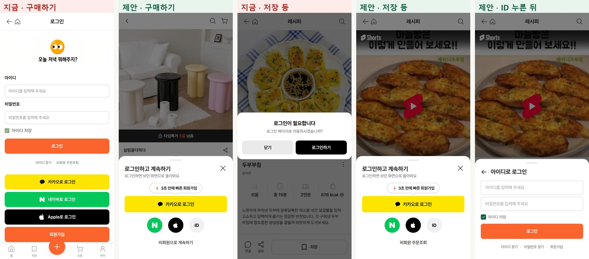
로그인 (전체 로그인 화면 없앰) · 모든 환경
바꾸지 않는 것 — 로그인을 묻는 곳 · 로그인 뒤 돌아갈 곳(returnUrl: 구매는 주문서, 저장은 보던 레시피) · 버튼 종류 · 비회원 조건(type=guestOrder: 구매하기·장바구니 주문·선물하기 — 맨 아래 글자만 바뀜) · 회원가입·비회원 주문조회 화면 · 문구 하나 · 환경과 상관없이 같은 창(13번만 예외).
| 항목 | 지금 (개발 앱에서 잰 값) | 제안 |
|---|---|---|
| 로그인 모양 | 전체 로그인 화면 · 저장·만들기·하트는 그 전에 확인 창 한 번 더 | 하던 화면 위 아래 창 · 확인 창 없음 |
| 창 | — | 위 모서리 20px · 손잡이 40×4 · 좌우 20px · 뒤 어둡게 50% · 높이 353px 하나 · 옵션 선택 창과 같은 틀 · 모양은 긴 버튼·동그라미·글자 셋뿐 |
| 제목·부제 | 「로그인」(위 바) | 「로그인하고 계속하기」 20px 700 · 「로그인하면 보던 화면으로 돌아와요」 14px #666666 · ✕ |
| 카카오 | 52px · 571px부터 | 맨 위 56px · 16px 700 · 「카카오로 로그인」 그대로 · 말풍선 「⚡ 3초 만에 빠른 회원가입」 |
| 네이버·Apple·아이디 | 큰 버튼 두 개 · 아이디 칸은 맨 위 | 동그라미 52px 세 개 한 줄 · N · Apple · ID 순 · 사이 20px · ID는 #F1F1F3 바탕 「ID」 16px 800 |
| 맨 아래 글자 한 줄 | 「비회원 주문하기」 · 메뉴 밑에 가려짐 | 버튼 아닌 글자 15px 500 · 누르는 칸 44px · 구매일 때 「비회원으로 계속하기」, 그 밖 「비회원 주문조회」 |
| 회원가입 | 큰 오렌지 버튼 | ID 누른 뒤 아래 링크(카카오·네이버·Apple은 누르면 가입까지 됨) |
| ID 누른 뒤 | — | 같은 창 · 「← 아이디로 로그인」 · 칸 48px 두 개 · 아이디 저장 · 로그인 52px(지금 색) · 아이디 찾기 | 비밀번호 찾기 | 회원가입 · 343px |
| 아이디 저장 체크 | 켬 #89A17F(세이지 계열) | 켬 딥그린 #145F48 + 흰 ✓ (가이드 §4.3 · 세이지는 v2.0에서 폐기) |
로그인 창 · 인스타그램·페이스북·스레드 앱 안 브라우저 · 12번이 먼저 적용돼야 함
문제 : • 인스타그램·페이스북·스레드 앱 안에서 열면, 카카오 로그인이 카카오톡으로 넘어가지 못합니다. 그래서 카카오 아이디·비밀번호를 다시 물어봅니다. • 네이버는 이 앱들 안에서도 네이버 앱으로 바로 넘어가 「동의」만 누르면 됩니다. 제안 : • 이 세 앱 안에서 열렸을 때만 12번 창의 큰 버튼을 네이버로 바꿔 주세요. 네이버 #03C75A, 흰 글자 「네이버로 로그인」, 크기·자리는 같습니다. • 첫 동그라미는 카카오(노랑)로 바꾸고, 나머지 동그라미는 Apple·ID 그대로입니다. • 말풍선은 「⚡ 네이버 앱으로 바로 가입」입니다. 「3초」는 카카오에만 씁니다. • 가리는 조건: 브라우저 이름표(UA)에 Instagram·FBAN·FBAV·FB_IAB·Barcelona(스레드) 중 하나가 있으면 13번, 없으면 12번입니다. • 그 밖은 12번과 같습니다. • 확인할 것: 스레드 안 이름표에 「Barcelona」가 들어가는지 실제 기기로 확인해 주세요. • 카카오 가입이 줄 수 있어, 적용 전 2주와 후 2주를 비교합니다. • 볼 숫자: 인스타 안에서 로그인 창을 본 사람 중 로그인을 끝낸 비율, 그중 카카오 비율, 채널 추가 수입니다. • 결과가 나쁘면 조건 한 줄만 끄면 12번으로 돌아갑니다.
프로토타입 열기 → https://hapjung470.github.io/jollypot-preview/fix1110/jollypot-v2-fix13-login-naver-insta-v1-2.html
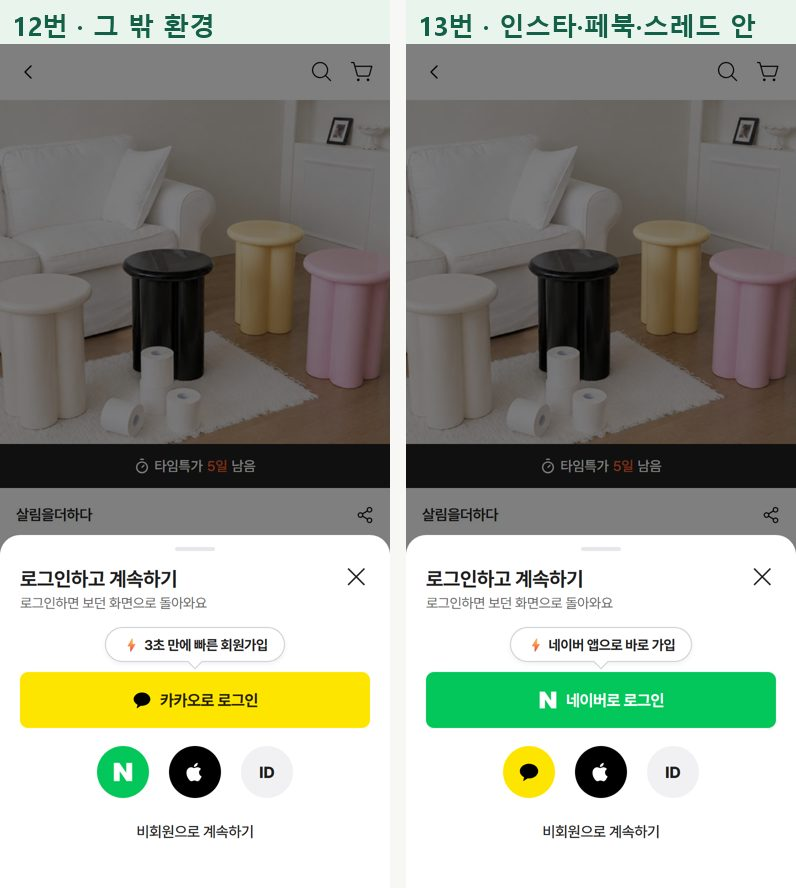
로그인 창 · 인스타그램·페이스북·스레드 앱 안 브라우저 · 12번이 먼저 적용돼야 함
| 항목 | 12번 (그 밖 환경) | 13번 (인스타·페북·스레드 안) |
|---|---|---|
| 가리는 조건 | 브라우저 이름표(UA)에 Instagram · FBAN · FBAV · FB_IAB · Barcelona(스레드) 중 하나가 있으면 13번, 없으면 12번 | |
| 큰 버튼 | 카카오 「카카오로 로그인」 | 네이버 #03C75A 흰 글자 「네이버로 로그인」 · 크기·자리 같음 |
| 동그라미 | 네이버 · Apple · ID | 카카오(노랑) · Apple · ID |
| 말풍선 | ⚡ 3초 만에 빠른 회원가입 | ⚡ 네이버 앱으로 바로 가입 |
| 그 밖 | 12번 | 12번과 같음 |
홈 (이런 레시피는 어때요?·화제의 레시피·최근에 저장한 레시피) > 레시피 카드 사진
문제 : • 홈 레시피 카드 사진 양옆에 검정·흐림 띠가 있어 길쭉하게 보입니다. • 카드 칸은 3:4로 맞습니다. 세로 영상(쇼츠)에 유튜브 가로 그림(480×360·1280×720)을 받아 와서, 그림 안에 띠가 박혀 있습니다. • 홈에 보이는 44장 중 9장입니다. 13장은 이미 유튜브 세로 원본 그림을 써서 띠가 없습니다. 제안 : • 세로 영상은 유튜브 세로 원본 그림으로 받아 주세요. 주소 끝이 oardefault.jpg이고, 없으면 oar2.jpg입니다. • 세로 원본에도 검은 띠가 있거나 세로 원본이 없으면, 저장할 때 가장자리의 검은 한 가지 색 줄을 잘라 냅니다. 그다음 3:4로 저장해 주세요(가이드 12.1). • 흰 배경은 띠로 보지 않습니다. 띠로 보고 자르면 제목 글자가 잘립니다. • 이미 만든 레시피도 한 번 일괄로 다시 받아 주세요. 카드 칸은 그대로입니다.
프로토타입 열기 → https://hapjung470.github.io/jollypot-preview/fix1110/jollypot-v2-fix14-home-thumbnail-v1.html
테스트 앱에서 보기: 884 계란말이 · 880 · 878 · 850 김치찌개 · 594 계란볶음밥 · 433 꽃게탕 · 392 된장찌개 · 493 · 870 애호박채전
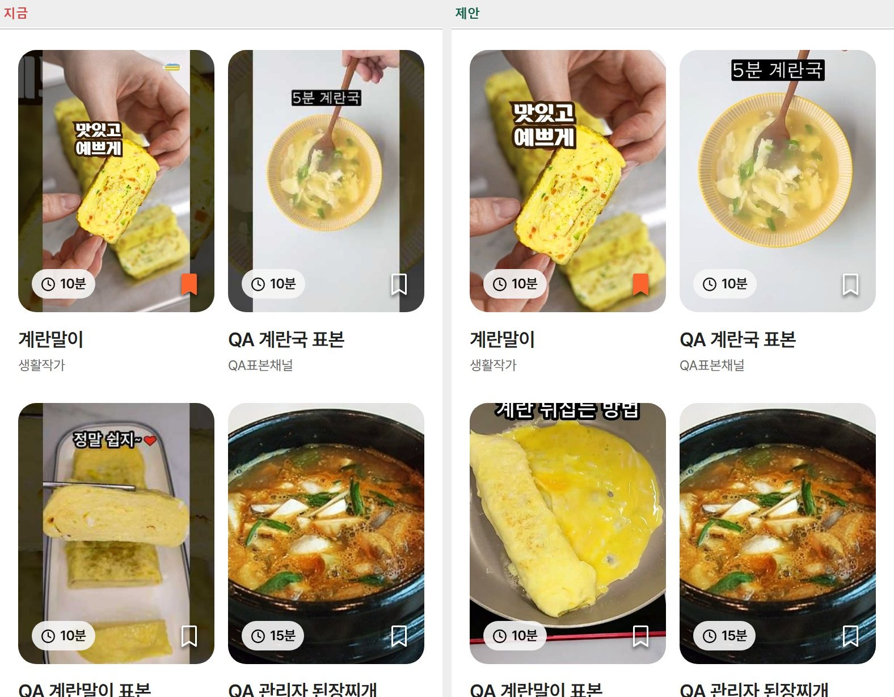
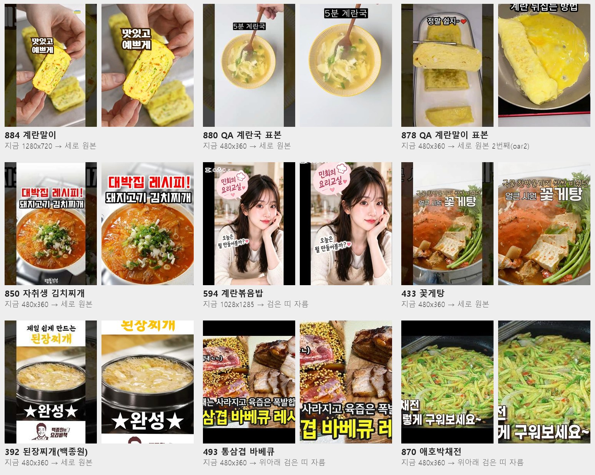
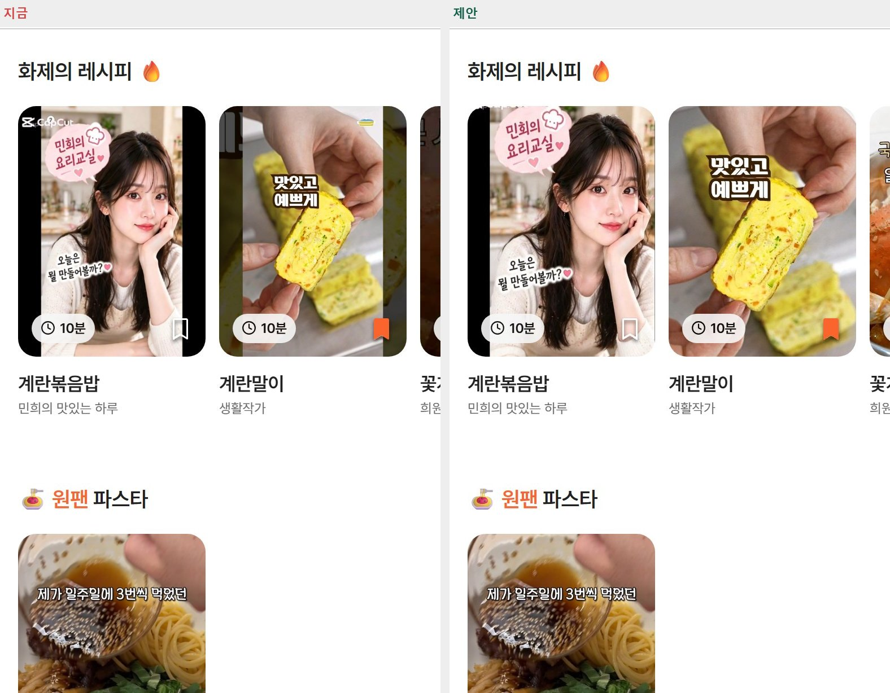
| 항목 | 지금 (개발 앱에서 잰 값) | 제안 |
|---|---|---|
| 카드 칸 | 3:4 · 꽉 채우기 (136×182 · 166×221 · 173×231) | 그대로 |
| 세로 영상(쇼츠)의 그림 | 가로 그림 hqdefault(480×360) · maxresdefault(1280×720) — 홈 44장 중 6장 | 유튜브 세로 원본 oardefault.jpg (없으면 oar2.jpg), 1080×1920 |
| 이미 세로 원본을 쓰는 레시피 | 13장 (594·627·833·905 등) | 그대로 — 같은 방식으로 맞춤 |
| 세로 원본에도 검은 띠가 있거나 세로 원본이 없을 때 | 띠째로 저장 — 3장 (594·493·870) | 저장할 때 가장자리의 검은 한 가지 색 줄을 잘라 냄 |
| 저장하는 그림 비율 | 제각각 (480×360 ~ 1206×2144) | 3:4 (가이드 12.1 「원본 자산은 3:4로 저장」) |
| 가로 영상(일반 동영상) | 가로 그림 | 그대로 (3:4로 가운데를 자르면 띠 없음) |
| 이미 만든 레시피 | — | 한 번 일괄로 다시 받기 (지금 홈에 보이는 44장 중 9장) |
공통 > 하단 메뉴 저장·마이 (로그인 안 한 손님)
문제 : • 로그인 안 한 손님이 하단 메뉴 「저장」·「마이」를 누르면 화면이 통째로 로그인 화면으로 바뀝니다(/login?returnUrl=/recipes/scrap · /mypage). • 보던 화면이 사라지고, 로그인하지 않고 나가려면 뒤로가기를 눌러야 합니다. • 12번에서 전체 로그인 화면을 없애면, 이 두 버튼은 갈 곳이 없어집니다. 제안 : • 로그인 안 한 손님이 「저장」·「마이」를 누르면 화면을 바꾸지 말고, 지금 보던 화면 위에 12번 로그인 창을 바로 띄워 주세요. 확인 창은 없습니다. • 창의 버튼·문구·크기는 12번과 같습니다. 맨 아래 글자는 「비회원 주문조회」입니다. 비회원이 마이에서 찾던 주문조회는 이 글자로 갑니다. • 로그인하면 누른 탭으로 갑니다(저장 → /recipes/scrap, 마이 → /mypage). 지금의 돌아갈 곳(returnUrl) 그대로입니다. • ✕·쓸어내리기·휴대폰 뒤로가기로 닫으면 보던 화면 그대로이고, 하단 메뉴 선택 표시도 원래 칸에 남습니다. • 로그인한 회원은 지금처럼 바로 저장·마이 화면으로 갑니다.
프로토타입 열기 → https://hapjung470.github.io/jollypot-preview/fix1110/jollypot-v2-fix15-tab-login-sheet-v1.html
테스트 앱에서 보기(로그아웃 상태): https://d1nmxpjaa8tlrm.cloudfront.net/ → 하단 저장 · 하단 마이
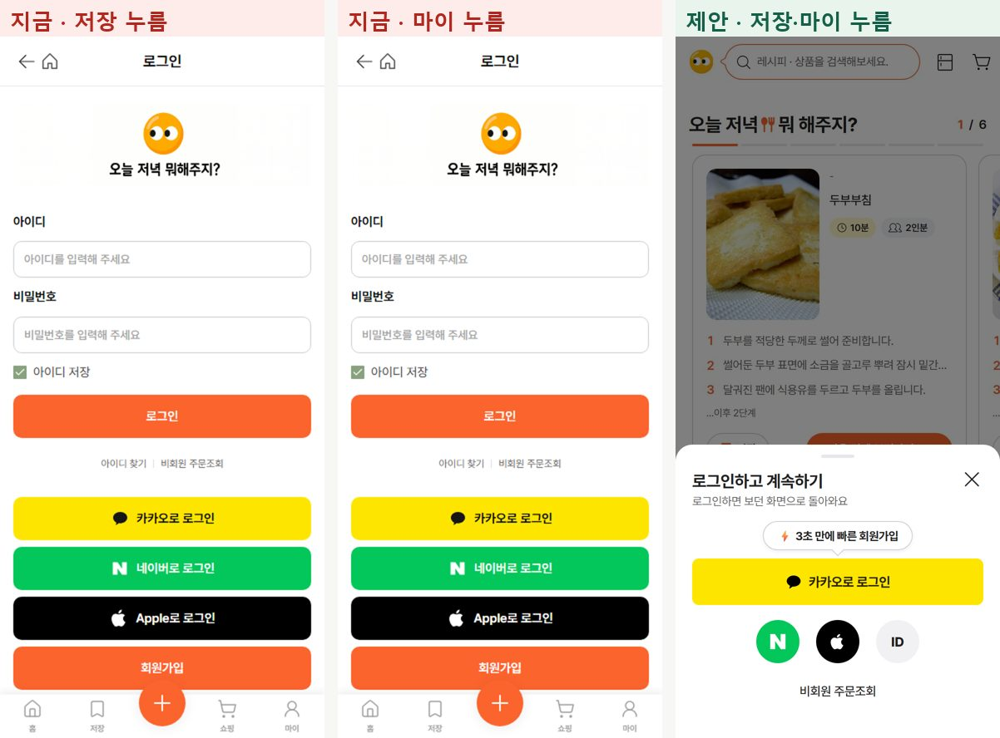
하단 + > 레시피 만들기 창 (로그인 안 한 손님)
문제 : • 로그인 안 한 손님이 하단 「+」를 누르면 「로그인이 필요합니다」 확인 창이 바로 떠서, 레시피 만들기 창을 볼 수 없습니다. • 영상 링크를 넣으면 AI가 레시피로 정리해 준다는 것을 보기 전에 로그인부터 묻습니다. • 직접 만들기 주소(/recipes/write)로 들어와도 바로 전체 로그인 화면입니다. 제안 : • 로그인 안 한 손님도 「+」를 누르면 회원과 같은 레시피 만들기 창을 열어 주세요. 링크 붙여넣기까지 됩니다. • [링크로 레시피 만들기]를 누를 때 로그인 창을 띄웁니다. 그 전에 링크 모양만 확인합니다(인스타 reel·p, 유튜브 shorts·watch·youtu.be). 모양이 다르면 로그인 대신 「이 링크는 만들 수 없어요」를 보여 줍니다. • 만들기 창을 내리고, 같은 자리에 12번 로그인 창을 올립니다(두 창을 겹치지 않음). 키보드는 먼저 내립니다. • ✕·쓸어내리기·뒤로가기는 링크가 들어 있는 만들기 창으로 돌아갑니다. • 붙여넣은 링크를 돌아갈 곳에 함께 실어 주세요(예: returnUrl=/?modal=recipe-create&link=…). 카카오·네이버 로그인은 다른 앱에 다녀오느라 화면이 새로 열려 입력이 사라집니다. • 로그인이 끝나면 다시 누르지 않아도 바로 만들기를 시작합니다(버튼 「레시피를 만들고 있어요」). • [직접 레시피 만들기]는 그 버튼을 누를 때 로그인 창을 띄웁니다. 4단계를 다 쓴 뒤 로그인하면 쓴 글이 날아갈 수 있어서입니다. • 12번의 「로그인을 묻는 곳은 그대로」에서 만들기만 예외입니다.
프로토타입 열기 → https://hapjung470.github.io/jollypot-preview/fix1110/jollypot-v2-fix16-create-login-v1.html
테스트 앱에서 보기(로그아웃 상태): https://d1nmxpjaa8tlrm.cloudfront.net/ → 하단 + · https://d1nmxpjaa8tlrm.cloudfront.net/recipes/write
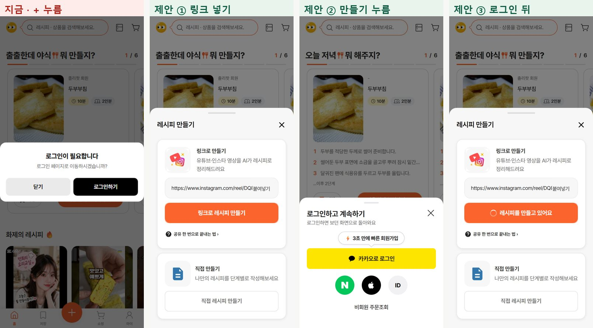